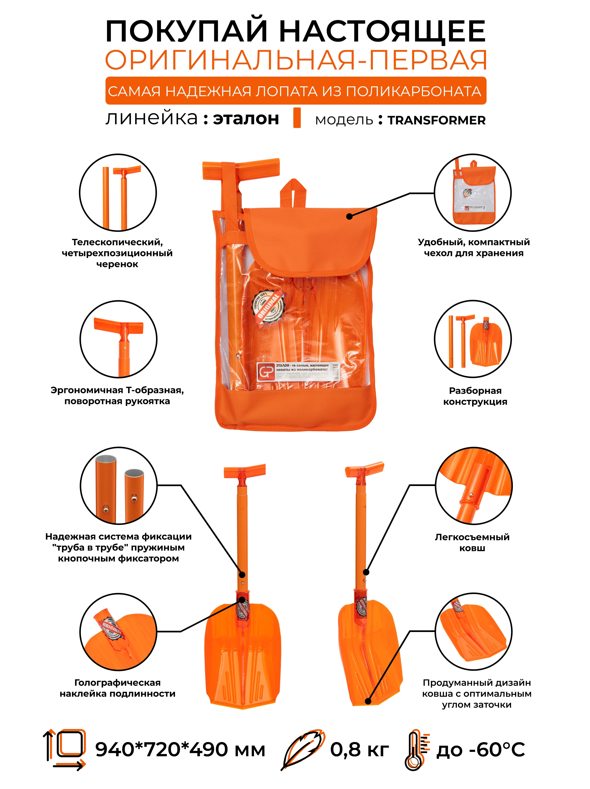
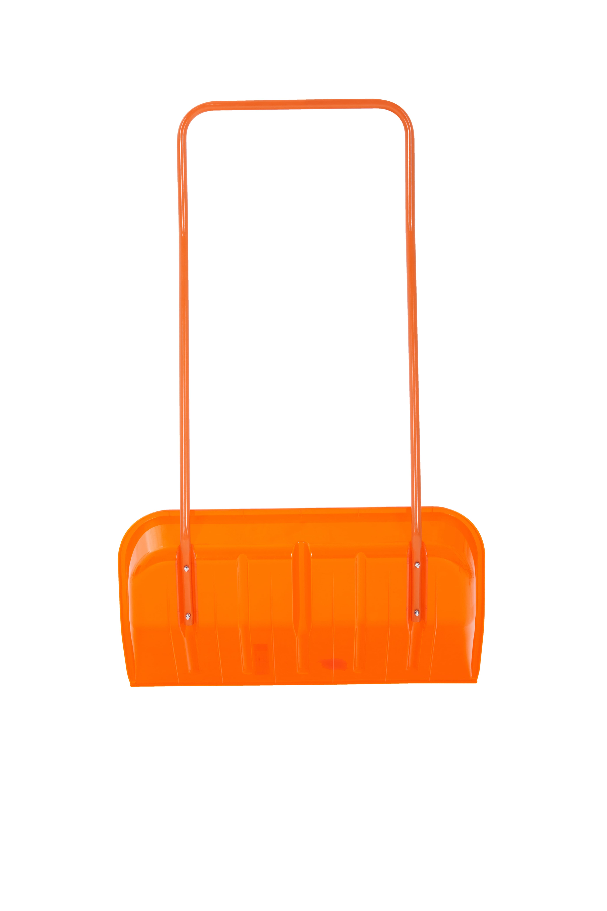
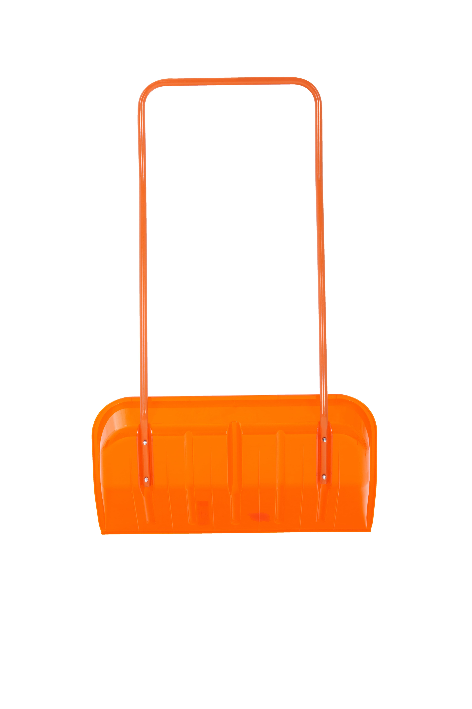
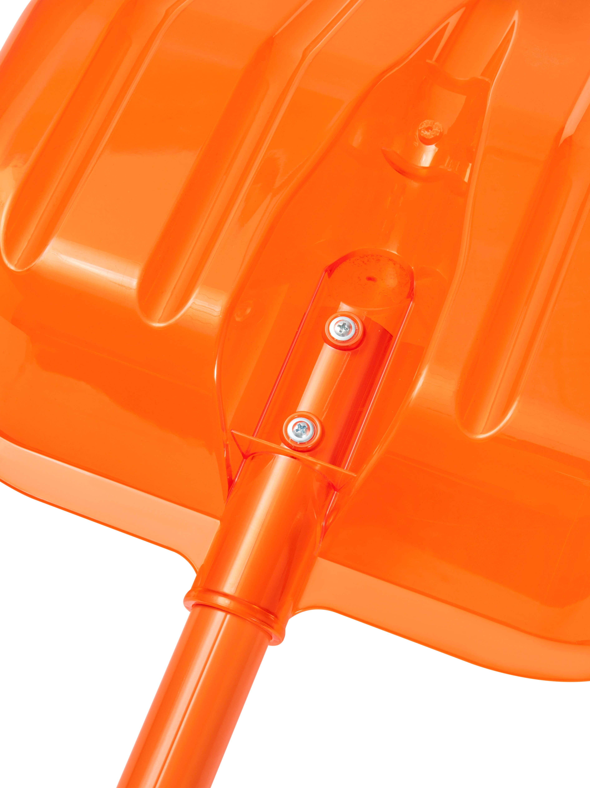

Каталог
Снеговая лопата из поликарбонатаЭТАЛОН TRANSFORMER
- Ширина: 225 мм
- Длина: 940 / 720 / 490 мм
- Вес: 0,81 кг
- Телескопический, четырехпозиционный черенок.
- Удобный, компактный чехол для хранения.
- Эргономичная Т-образная ручка, поворотная рукоятка.
- Разборная конструкция.
- Надёжная система фиксации «труба в трубе» пружинным кнопочным фиксатором.
- Легкосъемный ковш.
- Голографическая наклейка подлинности.
- Продуманный дизайн ковша с оптимальным углом заточки
1 750 руб.
Заказать


 



Скрепер для уборки снега из поликарбоната ЭТАЛОН ORIGINAL
- Ширина: 800 мм
- Длина: 1350 мм
- Вес: 4,2 кг
- Эргономичные углы изгиба ручки.
- Стальная П-образная ручка, окрашенная порошковой краской.
- Этикетка с голографическим логотипом, штрихкодированием EAN13, основными характеристиками и контактами изготовителя.
- Надёжное, болтовое четырёхпозиционное крепление ручки.
- Голографическая наклейка подлинности.
- Морозостойкий флюоресцентный ковш из поликарбоната.
4 000 руб.
Заказать


Снеговая лопата из поликарбоната ЭТАЛОН AUTO
- Ширина: 225 мм
- Длина: 880 мм
- Вес: 0.65 кг
- Ручка из морозостойкого блоксополимера с гравировкой логотипа производителя.
- Надёжное двухпозиционное крепление ручки.
- Этикетка с голографическим логотипом, штрихкодированием EAN13, основными характеристиками и контактами изготовителя.
- Удобство монтажа и надежность крепления благодаря дизайну черенка.
- Цельно-экструдированный алюминиевый черенок с ребром жесткости, окрашенный порошковой краской.
- Надёжное двухпозиционное крепление ковша.
- Голографическая наклейка подлинности.
- Ковш из флуоресцентного поликарбоната с оптимальным углом заточки.
900 руб.
Заказать


Снеговая лопата из поликарбоната ЭТАЛОН LITE
- Ширина: 380 мм
- Длина: 1420 мм
- Вес: 1.325 кг
- Ручка из морозостойкого блоксополимера с гравировкой логотипа производителя.
- Надёжное двухпозиционное крепление ручки.
- Этикетка с голографическим логотипом, штрихкодированием EAN13, основными характеристиками и контактами изготовителя.
- Удобство монтажа и надежность крепления благодаря дизайну черенка.
- Цельно-экструдированный алюминиевый черенок с ребром жесткости, окрашенный порошковой краской.
- Надёжное двухпозиционное крепление ковша.
- Голографическая наклейка подлинности.
- Ковш из флуоресцентного поликарбоната с оптимальным углом заточки.
1 500 руб.
ЗаказатьСнеговая лопата из поликарбоната ЭТАЛОН ORIGINAL
- Ширина: 475 мм
- Длина: 1420 мм
- Вес: 1.5 кг
- Ручка из морозостойкого блоксополимера с гравировкой логотипа производителя.
- Надёжное двухпозиционное крепление ручки.
- Этикетка с голографическим логотипом, штрихкодированием EAN13, основными характеристиками и контактами изготовителя.
- Удобство монтажа и надежность крепления благодаря дизайну черенка.
- Цельно-экструдированный алюминиевый черенок с ребром жесткости, окрашенный порошковой краской.
- Надёжное двухпозиционное крепление ковша.
- Голографическая наклейка подлинности.
- Ковш из флуоресцентного поликарбоната с оптимальным углом заточки.
1 600 руб.
Заказать